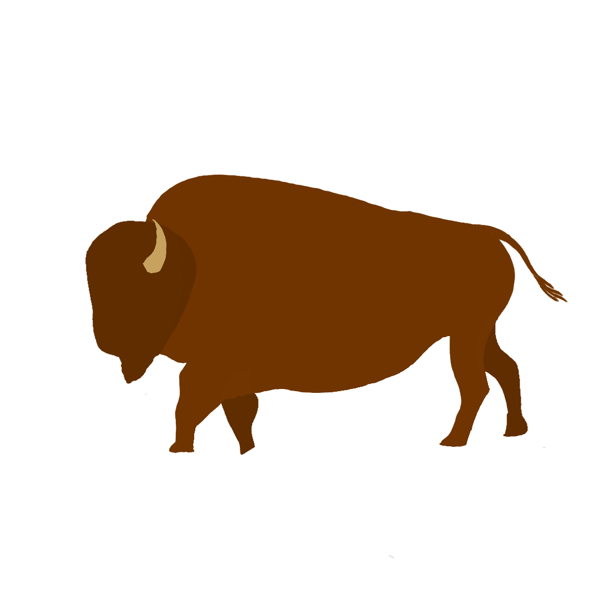
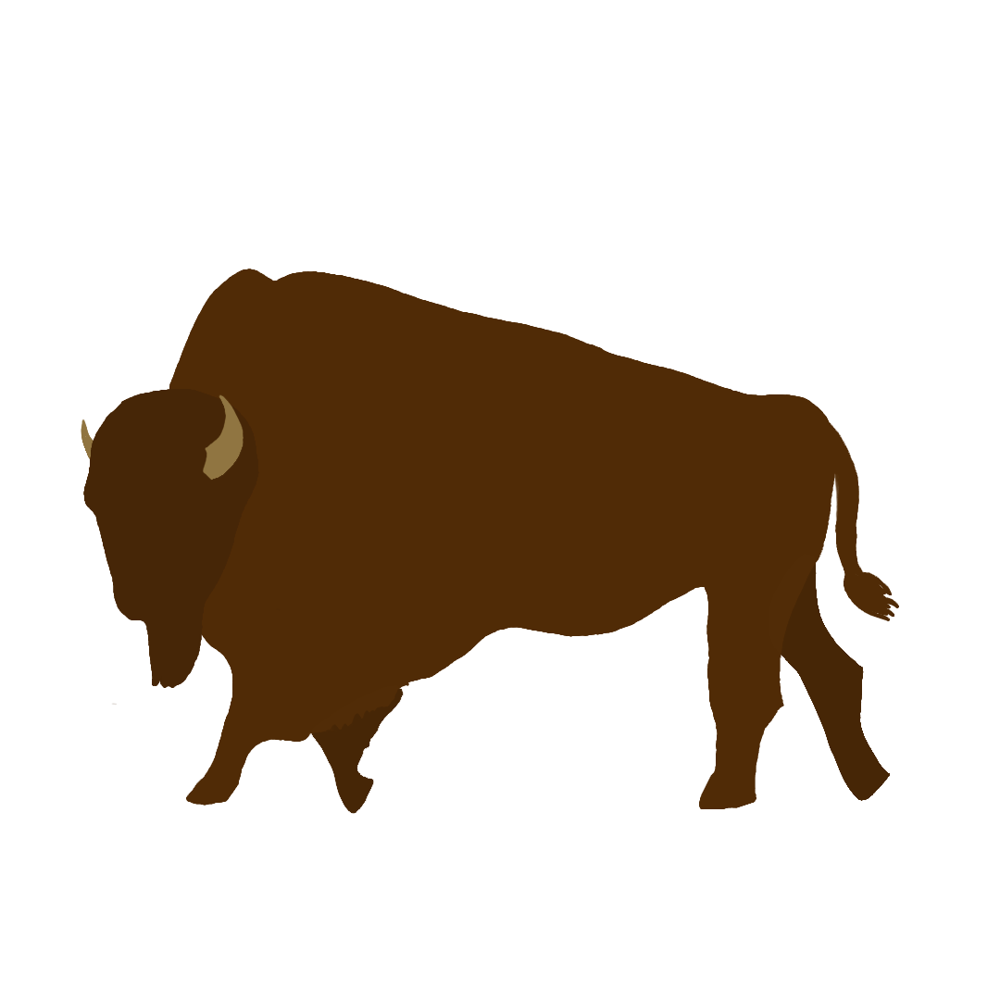

Buffalo,
Iinnii, Tatanga, Tatanka, Paskwâwimostos, Xaniti,
Qwisp, Kamquq̓ukuǂ ʔiyamu, Iyanee’,
heneeceeno’,ésevone,
Mushkode Bizhikim, Q’weyqway, Hii3einoon, boyzhan,
ʔíítaanɔ́ɔ́nʔi,
Bison
Is it Buffalo or Bison?
Bison are commonly known as Buffalo. Bison and Buffalo are the same animal. The words are often used interchangeably. You can say Buffalo is the common name and Bison is the scientific name (Bison bison). Buffalo are the largest land mammal found in North America. There are two types of Buffalo in Canada, the Wood Buffalo and the Plains Buffalo.
Wood Buffalo vs Plains Buffalo
Currently, Wood Buffalo (Bison bison bison) is listed as Threatened and classified as ‘wildlife’ only in British Columbia, Alberta, Manitoba, and the Northwest Territories. Meanwhile, Plains Buffalo (Bison bison athabascae) is listed as ‘Special Concern’ and are not protected under the Species at Risk Act (SARA) in Canada. They are only classified as ‘wildlife’ in British Columbia and Saskatchewan and as ‘livestock’ in Alberta and Manitoba.
The Wood Buffalo is larger compared to the Plains Buffalo.

Drawing of male Wood Buffalo (top) vs Plains Buffalo (bottom) COSEWIC 2014, p. 5, figure 1
COSEWIC 2014, p. 6, figure 2
History
Bison used to roam North America in the tens of millions.


Photographer unknown (1892). Pile of American Bison skulls waiting to be ground for fertilizer. Wikimedia Commons
{kind=link}
-Lieutenant-General John M. Schofield (Schofield 1897)
Reintroduction Program
The Plains Bison was completely lost in Canada until a herd (Elk Island herd) was brought from Montana. This was regarded as one of the biggest conservation initiative that Canada has ever done. It started from 34 individuals. The most recent one was the Banff National Park Bison Reintroduction Program. In 2017, 16 Plains Buffalo was brought to Banff National Park. As of 2024, there are over 130 individuals roaming the park. For information, check out the Parks Canada Bison blog.

Buffalo historical lineages (Stroupe et al. 2022)
Why Buffalo?
“…coming from a ᓀᐦᐃᔭᐤ (nêhiyaw, Cree) background, our species was Bison…There’s so many different meanings. Like for example many ceremonies, even my own wedding, I had a Buffalo skull present in every ceremony. In our culture, it’s regarded as like one of the greatest teachers, and like high of the highest renowned kind of spiritual beings. So you have that aspect of it that kind of plays into the culture for me also.” -Remington Bracher

Buffalos Hunting Toronto Public Library Special Collections
Since time immemorial, Indigenous communities across North America have relied on wildlife to support their ways of life. Regionally abundant species that are fundamental to communities’ diets, materials, medicine, art, and spiritual practices have been referred to as Cultural Keystone Species (CKS) (Garibaldi & Turner, 2004).
The loss of Buffalo has impacted Indigenous food sovereignty and these communities’ cultural practices, language, and knowledge transmission (Lamb et al., 2023). As conservation values, ethics, and initiatives started to recognize the importance of Buffalo on the landscape, we also witnessed the significance of National Parks in the species conservation story.
About Us
ᑕᓂᓯ (tân’si”, hello), my name is Remington Bracher. I am currently a Master of Science student at the University of British Columbia at Okanagan campus, which is located on the unceded and ancestral land of the Syilx Okanagan First Nation in Dr. Adam Ford’s Wildlife Restoration Ecology (WiRE) Lab. My academic background includes a Bachelor of Science in Environmental and Conservation Sciences from the University of Alberta and a technical diploma in Conservation Biology from the Northern Alberta Institute of Technology. In addition to formal education, my knowledge has been shaped by my experiences as a land user and the cultural teachings I received throughout my life. As an Indigenous researcher, I recognize that my research is not just a contribution to academia but also serves the needs and priorities of Indigenous communities working towards self-determination.
สวัสดีค่ะ (sawadee ka, hello), my name is Aimee Chhen. I am of Chinese descent and of Canadian and Thai Nationality. I am a Master of Science student in Dr. Michael Noonan’s Quantitative Ecology Lab at the University of British Columbia at Okanagan campus (UBCO) which is located on the unceded and ancestral land of the Syilx Okanagan First Nation. I have a Bachelor of Science in Zoology from UBCO and my research focus is in behavioural ecology. I am currently studying the behavioural response of mountain goats in Cathedral Provincial Park to wildfire during the Crater Creek wildfire in 2023. My contribution to Remington’s project has been creating and developing this website for his work from a science communication perspective with my fellow team member, Hunter, for our BIOL_O 430N course.
Hello, my name is Hunter. I come from a settler family of Swedish and Scots/Irish descent, and grew up in both southern Alberta and northern Saskatchewan. I am currently an undergraduate student pursuing a Bachelor of Science in Biology at the University of British Columbia Okanagan (UBCO), which is located on the unceded and ancestral land of the Syilx Okanagan First Nation. My contribution to Remington’s project has been creating and developing the social media content for his work from a science communication perspective with my fellow team member, Aimee, for our BIOL_O 430N course.Acknowledgements
We want to thank Dr. Robin Young and the students of BIOL_O 430N Science Communication in Digital Media (2025) at the University of British Columbia, Okanagan for their valuable insight in communicating this work through digital media. Their feedback were instrumental in refining on how to present this works through digital platforms improved accessibility and engagement for a broad and diverse audiences.